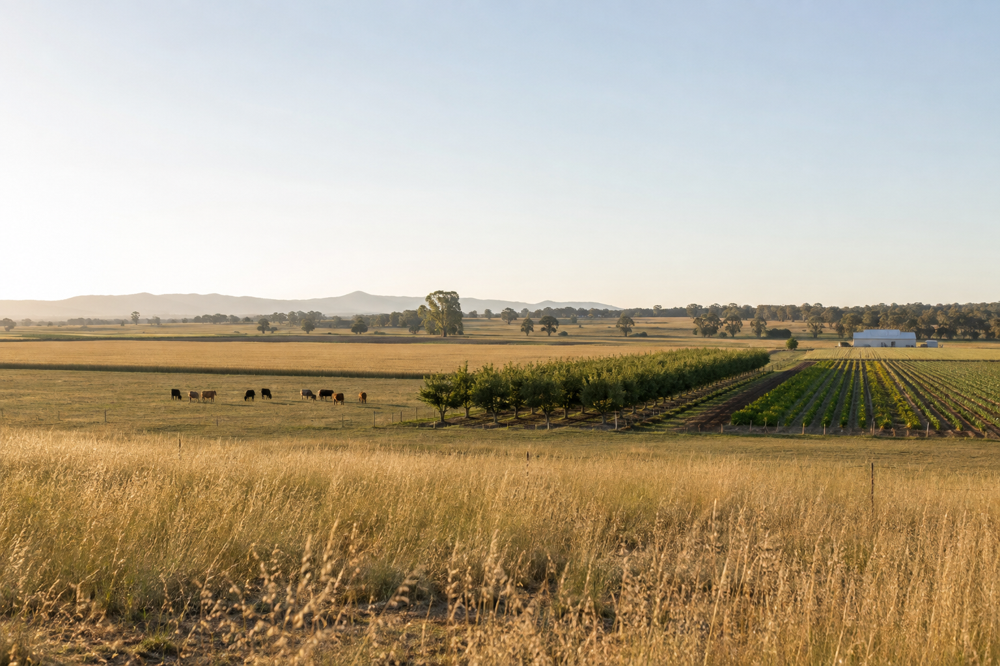

Use the supplied lesson
Start with the matching 2026 lesson package and trace every important claim to an authorised source.
Stage 4 Technology guided course
Investigate food and agricultural practices through agriculture, food security, beef, dairy, horticulture, pork and poultry.

Open largerHow the course works
Every module has three substantial theory sections. Each named section has ten student-learning knowledge checks, followed by written evidence that autosaves on this browser and device.
Start with the matching 2026 lesson package and trace every important claim to an authorised source.
Use feedback to correct misconceptions, then explain comparisons, systems, choices and trade-offs.
Autosave supports work on this device. Use Print / Save PDF and the folio backup to keep evidence outside the webpage.
Course pathway
Define agriculture, connect products to industry sectors and examine how people and technologies shape production.
Open module →Explain why agriculture matters and investigate the availability, access, use and stability of food.
Open module →Compare cattle groups and breeds, then connect characteristics to environment and production goals.
Open module →Compare beef-production and feeding systems, then explain the trade-offs using the supplied lesson evidence.
Open module →Relate dairy breeds, regions, routines and value adding without inventing local farm requirements.
Open module →Sequence milk processing and explain taught nutrition concepts using current, visible sources.
Open module →Investigate horticultural products and explain how climate, water, soil and management affect regions.
Open module →Trace a product supply chain and evaluate the role of technology, work and food choice.
Open module →Interpret product labels and industry evidence, then explain breed selection and crossbreeding.
Open module →Compare production systems and reason about feeding, welfare, efficiency and farmer choices.
Open module →Distinguish broilers and layers, compare production systems and examine evidence-based trade-offs.
Open module →Collect one evidence record for each lesson plus a source-gated course synthesis and plan-status card.
Open folio →Project-plan status
The authorised folder contains lesson packages and supplementary older workbook material, but no current agriculture-plot, poultry-shed or production plan that can control project specifications.
Complete Cards 1–11 and the course-synthesis part of Card 12. Use current teacher-issued directions for any practical or animal-care work.
NSW Technology 7–8 Syllabus (2023)
The current syllabus is implemented from 2026. These outcomes are directly supported by the Food and agricultural practices focus area and supplied lesson evidence; they are not automatically a formal assessed set.
Explains relationships between sustainability, design and production.
Describes the practices and processes of designers and producers.
Applies processes in the planning, management and production of projects.
Communicates and evaluates design ideas and solutions.
Selects and safely uses tools, materials, technologies and processes. This opportunity applies only where teacher-confirmed practical evidence supports it.
Authorised sources
The Year 8/2026 folder controls the 11-module learning order and supplies lesson plans, theory slides and student activities.
Open authorised lesson folder ↗The older Stage 4 workbook and poultry booklet may support reference reading, but they do not create current practical, plan or assessment requirements.
Open authorised Stage 4 folder ↗